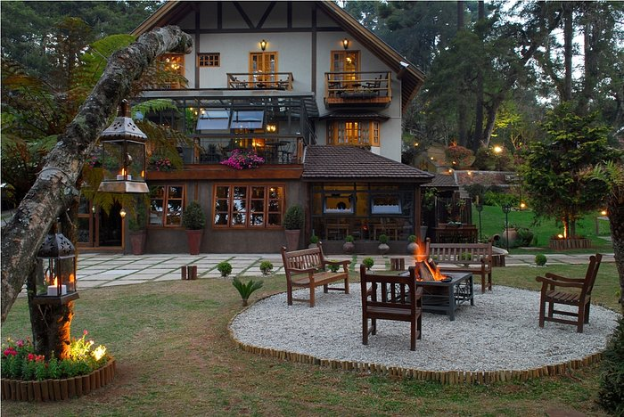

<html lang="pt-br"></html>
<head>
  <meta charset="UTF-8">
  <meta name="viewport" content="width=device-width, initial-scale=1.0">
  <title>Pousada da Pedra</title>
  <link href="https://cdn.jsdelivr.net/npm/bootstrap@5.3.0/dist/css/bootstrap.min.css" rel="stylesheet">
  <link rel="stylesheet" href="./css/pagina.inicial.css">
    
</head>
<body>

    <nav class="navbar navbar-expand-lg">
        <div class="container-fluid">
          <div class="collapse navbar-collapse justify-content-center" id="navbarNav">
            <ul class="navbar-nav">
              <li class="nav-item">
                <a class="nav-link" href="./contatos.html">Contato</a>
              </li>
              <li class="nav-item">
                <a class="nav-link" href="./pagina.comodos.html">quartos</a>
              </li>
              <li class="nav-item">
                <a class="nav-link active" aria-current="page" href="../inicial.html">Página Inicial</a>
              </li>
              <li class="nav-item">
                <a class="nav-link" href="./local.html">Local</a>
              </li>
              <li class="nav-item">
                <a class="nav-link" href="./reservas.html">Reservas</a>
              </li>
            </ul>
          </div>
        </div>
      </nav>

  <div class="container mt-5">
    <div class="row">
      <div class="col-md-12">
        <div class="hero-section text-center">
          <div class="card-custom p-4">
            <div class="row">
              <div class="col-md-4">
                
              </div>
              <div class="col-md-8">
                <h4>Pousada da Pedra</h4>
                <div class="rating mb-2">
                  <span>★★★★★</span>
                </div>
                <p>1,6 km do centro</p>
                <p>Situada na tranquila Campos do Jordão, a Pousada da Pedra é um chalé suíço iluminado por uma suave luz amarela. Aos sábados e feriados, a propriedade oferece um chá da tarde com vinho espumante.</p>
              </div>
            </div>
          </div>
        </div>
      </div>
    </div>
  </div>
  <div class="text-center py-3 custom-bg-color">
    <p>&copy; 2024 Pousada da Pedra. Todos os direitos reservados.</p>
  </div>
  <script src="https://cdn.jsdelivr.net/npm/bootstrap@5.3.0/dist/js/bootstrap.bundle.min.js"></script>
</body>
</html>